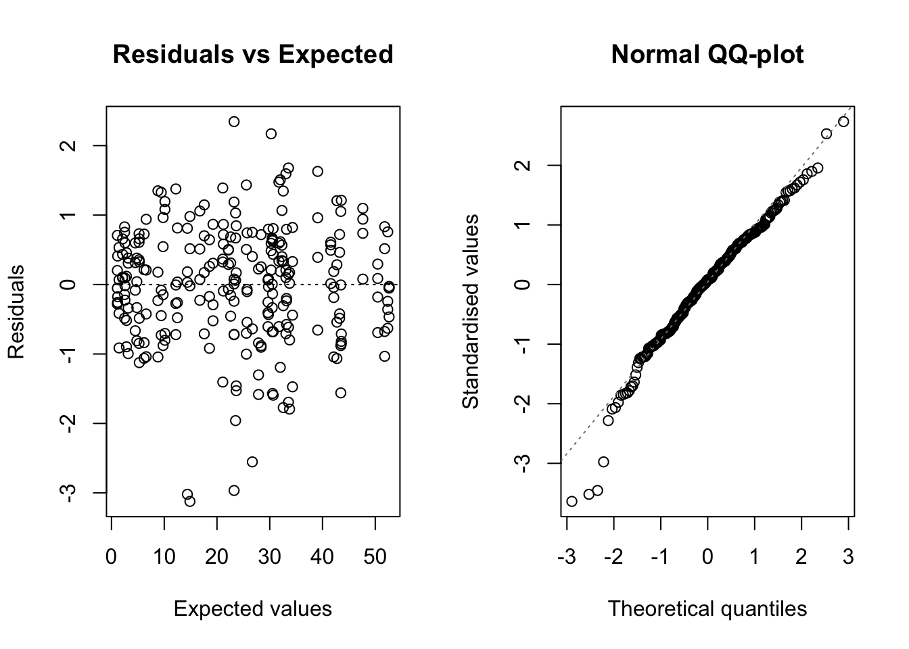
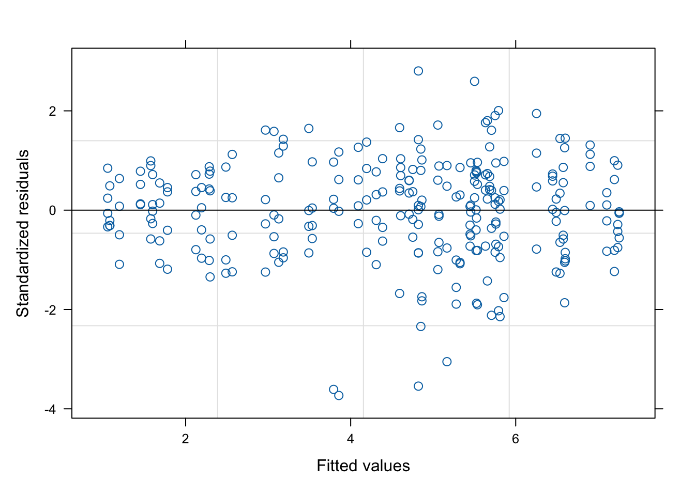
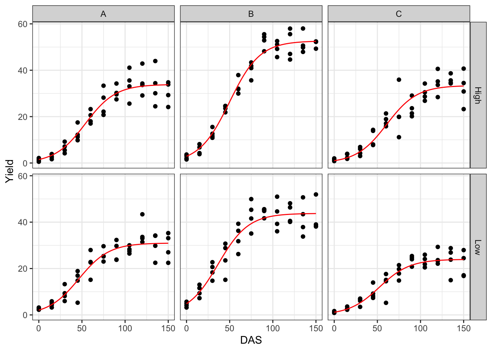

library(ggplot2)
library(nlme)
library(statforbiology)
dataset <- getAgroData("growthNGEN")
dataset$Block <- factor(dataset$Block)
dataset$N <- factor(dataset$N)
dataset$GEN <- factor(dataset$GEN)
head(dataset)
## Id DAS Block Plot GEN N Yield
## 1 1 0 1 1 A Low 2.786
## 2 2 15 1 1 A Low 5.871
## 3 3 30 1 1 A Low 13.265
## 4 4 45 1 1 A Low 16.926
## 5 5 60 1 1 A Low 22.812
## 6 6 75 1 1 A Low 25.346Factorial experiments are very common in agriculture and they are usually laid down to test for the significance of interactions between experimental factors. For example, genotype assessments may be performed at two different nitrogen fertilisation levels (e.g. high and low) to understand whether the ranking of genotypes depends on nutrient availability. For those of you who are not very much into agriculture, I will only say that such an assessment is relevant, because we need to know whether we can recommend the same genotypes, e.g., both in conventional agriculture (high nitrogen availability) and in organic agriculture (relatively lower nitrogen availability).
Let’s consider an experiment where we have tested three genotypes (let’s call them A, B and C, for brevity), at two nitrogen rates (‘high’ an ‘low’) in a complete block factorial design, with four replicates. Biomass subsamples were taken from each of the 24 plots in eight different times (Days After Sowing: DAS), to evaluate the growth of biomass over time.
The dataset is available on ‘statforbiology’, which is the accompanying package for this blog and it is available on CRAN. It is composed by the following variables:
- ‘Id’: a numerical code for observations
- ‘DAS’: i.e., Days After Sowing. It is the moment when the sample was collected
- ‘Block’, ‘Plot’, ‘GEN’ and ‘N’ represent respectively the block, plot, genotype and nitrogen level for each observation
- ‘Yield’ represents the harvested biomass.
For this post, we will use several other packages, which are indicated at the beginning of the following code box; next, the dataset is loaded and the ‘Block’, ‘N’ and ‘GEN’ variables are transformed into factors.
To start the analyses, it may be useful to take a look at the observed growth data, as displayed on the graph below.

We see that the growth is sygmoidal (presumably logistic) and that the variance of observations increases over time, i.e. the variance is proportional to the expected response.
The question is: how do we analyse this data? Let’s build a model in a sequential fashion.
The model
We could empirically assume that the relationship between biomass and time is logistic:
\[ Y_{ijkl} = \frac{d_{ijkl}}{1 + exp\left[b \left( X_{ijkl} - e_{ijkl}\right)\right]} + \varepsilon_{ijkl}\quad \quad (1)\]
where \(Y\) is the observed biomass yield at time \(X\), for the i-th genotype, j-th nitrogen level, k-th block and l-th plot, \(d\) is the maximum asymptotic biomass level when time goes to infinity, \(b\) is the slope at inflection point, while \(e\) is the time when the biomass yield is equal to \(d/2\). We are mostly interested in the parameters \(d\) and \(e\): the first one describes the yield potential of a genotype, while the second one gives a measure of the speed of growth.
There are repeated measures in each plot and, therefore, model parameters may show some variability, depending on the genotype, nitrogen level, block and plot. In particular, it may be acceptable to assume that \(b\) is pretty constant and independent on the above factors, while \(d\) and \(e\) may change according to the following equations:
\[\left\{ {\begin{array}{*{20}{c}} d_{ijkl} = \mu_d + g_{di} + N_{dj} + gN_{dij} + \theta_{dk} + \zeta_{dl}\\ e_{ijkl} = \mu_e + q_{ei} + N_{ej} + gN_{eij} + \theta_{ek} + \zeta_{el} \end{array}} \right. \quad \quad (2) \]
where, for each parameter, \(\mu\) is the intercept, \(g\) is the fixed effect of the i-th genotype, \(N\) is the fixed effect of j-th nitrogen level, \(gN\) is the fixed interaction effect, \(\theta\) is the random effect of blocks, while \(\zeta\) is the random effect of plots within blocks. These two equations are totally equivalent to those commonly used for linear mixed models, in the case of a two-factor factorial block design, wherein \(\zeta\) would be the residual error term. Indeed, in principle, we could also think about a two-steps fitting procedure, where we:
- fit the logistic model to the data for each plot and obtain estimates for \(d\) and \(e\)
- use these estimates to fit a linear mixed model
We will not pursue this two-steps technique here and we will concentrate on one-step fitting.
A wrong method
If the observations were independent (i.e. no blocks and no repeated measures), this model could be fit by using conventional nonlinear regression. My preference goes to the drm() function in the ‘drc’ package (Ritz et al., 2015).
The coding is reported below: ‘Yield’ is a function of (\(\sim\)) DAS, by way of a three-parameters logistic function (‘fct = L.3()’). Different curves have to be fitted for different combinations of genotype and nitrogen levels (‘curveid = N:GEN’), although these curves should be partly based on common parameter values (’pmodels = …).
The ‘pmodels’ argument requires a few additional comments. It must be a vector with as many element as there are parameters in the model (three, in this case: \(b\), \(d\) and \(e\)). Each element represents a linear function of variables and refers to the parameters in alphabetical order, i.e. the first element refers to \(b\), the second refers to \(d\) and the third to \(e\). The parameter \(b\) is not dependent on any variable (‘~ 1’) and thus a constant value is fitted across curves; \(d\) and \(e\) depend on a fully factorial combination of genotype and nitrogen level (~ N*GEN = ~N + GEN + N:GEN). Finally, we used the argument ‘bcVal = 0.5’ to specify that we intend to use a Transform-Both-Sides technique, where a logarithmic transformation is performed for both sides of the equations. This is necessary to account for heteroscedasticity, but it does not affect the scale of parameter estimates.
modNaive1 <- drm(Yield ~ DAS, fct = L.3(), data = dataset,
curveid = GEN:N,
pmodels = c( ~ 1, ~ N*GEN, ~ N*GEN), bcVal = 0.5)This model may be useful for other circumstances (no blocks and no repeated measures), but it is wrong in our example. Indeed, observations are clustered within blocks and plots; by neglecting this, we violate the assumption of independence of model residuals. Swift plots of residuals against fitted values and QQ-plot show that there are no problems with heteroscedasticity and normality, although a few outliers might deserve careful inspection (which we will neglect now). Note that these two graphs are obtained using the plotRes() function in ‘statforbiology’.

Considering the above, we have to use a different model, here, although I will show that this naive fit may turn out useful.
Nonlinear mixed model fitting
In order to account for the clustering of observations, we switch to a Nonlinear Mixed-Effect model (NLME). A good choice is the nlme() function in the ‘nlme’ package (Pinheiro and Bates, 2000), although the syntax may be cumbersome, at times. I will try to help, listing and commenting the most important arguments for this function. We need to specify the following:
- A deterministic function. In this case, we use the
NLS.L3()function in the ‘statforbiology’ package, which provides a logistic growth model with the same parameterisation as theL.3()function in the ‘drc’ package. - Linear functions for model parameters. The ‘fixed’ argument in the ‘nlme’ function is very similar to the ‘pmodels’ argument in the ‘drm’ function above, in the sense that it requires a list, wherein each element is a linear function of variables. The only difference is that the parameter name needs to be specified on the left side of the function.
- Random effects for model parameters. These are specified by using the ‘random’ argument. In this case, the parameters \(d\) and \(e\) are expected to show random variability from block to block and from plot to plot, within a block. For the sake of simplicity, as the parameter \(b\) is not affected by the genotype and nitrogen level, we also expect that it does not show any random variability across blocks and plots.
- Starting values for model parameters. Self starting routines are not used by
nlme()and thus we need to specify a named vector, holding the initial values of model parameters. In this case, I decided to use the output from the ‘naive’ nonlinear regression above, which, therefore, turns out useful.
The transformation of both sides of the equation is made explicitely.
modnlme1 <- nlme(sqrt(Yield) ~ sqrt(NLS.L3(DAS, b, d, e)),
data = dataset,
random = d + e ~ 1|Block/Plot,
fixed = list(b ~ 1, d ~ N*GEN, e ~ N*GEN),
start = coef(modNaive1),
control = list(msMaxIter = 400))
summary(modnlme1)$tTable
## Value Std.Error DF t-value p-value
## b 0.05652837 0.002157629 228 26.1993020 1.044741e-70
## d.(Intercept) 33.91575342 1.222612862 228 27.7403866 5.073981e-75
## d.NLow -3.18382830 1.592502915 228 -1.9992606 4.676721e-02
## d.GENB 18.90014655 1.864712690 228 10.1356883 3.602000e-20
## d.GENC -1.15934031 1.686405260 228 -0.6874625 4.924901e-01
## d.NLow:GENB -5.99216684 2.455759090 228 -2.4400467 1.544862e-02
## d.NLow:GENC -5.82864850 2.217534784 228 -2.6284361 9.160825e-03
## e.(Intercept) 55.20071245 2.320784590 228 23.7853667 1.087152e-63
## e.NLow -9.06217433 3.127165854 228 -2.8978873 4.123119e-03
## e.GENB -4.47038040 2.761533522 228 -1.6188036 1.068720e-01
## e.GENC 4.00746125 3.084383590 228 1.2992746 1.951620e-01
## e.NLow:GENB -4.71367450 4.055953594 228 -1.1621618 2.463848e-01
## e.NLow:GENC 2.23951051 4.609547592 228 0.4858417 6.275460e-01

From the plots above, we see that the overall fit is good. Fixed effects and variance components for random effects are obtained as follows:
summary(modnlme1)$tTable
## Value Std.Error DF t-value p-value
## b 0.05652837 0.002157629 228 26.1993020 1.044741e-70
## d.(Intercept) 33.91575342 1.222612862 228 27.7403866 5.073981e-75
## d.NLow -3.18382830 1.592502915 228 -1.9992606 4.676721e-02
## d.GENB 18.90014655 1.864712690 228 10.1356883 3.602000e-20
## d.GENC -1.15934031 1.686405260 228 -0.6874625 4.924901e-01
## d.NLow:GENB -5.99216684 2.455759090 228 -2.4400467 1.544862e-02
## d.NLow:GENC -5.82864850 2.217534784 228 -2.6284361 9.160825e-03
## e.(Intercept) 55.20071245 2.320784590 228 23.7853667 1.087152e-63
## e.NLow -9.06217433 3.127165854 228 -2.8978873 4.123119e-03
## e.GENB -4.47038040 2.761533522 228 -1.6188036 1.068720e-01
## e.GENC 4.00746125 3.084383590 228 1.2992746 1.951620e-01
## e.NLow:GENB -4.71367450 4.055953594 228 -1.1621618 2.463848e-01
## e.NLow:GENC 2.23951051 4.609547592 228 0.4858417 6.275460e-01
#
VarCorr(modnlme1)
## Variance StdDev Corr
## Block = pdLogChol(list(d ~ 1,e ~ 1))
## d.(Intercept) 1.403834e-07 3.746777e-04 d.(In)
## e.(Intercept) 7.345217e-08 2.710206e-04 -0.001
## Plot = pdLogChol(list(d ~ 1,e ~ 1))
## d.(Intercept) 1.457716e-08 1.207359e-04 d.(In)
## e.(Intercept) 5.271402e-09 7.260442e-05 -0.001
## Residual 1.750623e-01 4.184044e-01Now, let’s go back to our initial aim: testing the significance of the ‘genotype x nitrogen’ interaction. Indeed, we have two available tests: on for the parameter \(d\) and one for the parameter \(e\). First of all, we code two ‘reduced’ models, where the genotype and nitrogen effects are purely addictive. To do so, we change the specification of the fixed effects from ’~ N*GEN’ to ‘~ N + GEN’. Also in this case, we use a ‘naive’ nonlinear regression fit to get starting values for model parameters, to be used in the following NLME model fitting.
modNaive2 <- drm(Yield ~ DAS, fct = L.3(),
data = dataset,
curveid = N:GEN,
pmodels = c( ~ 1, ~ N + GEN, ~ N * GEN),
bcVal = 0.5)
modnlme2 <- nlme(sqrt(Yield) ~ sqrt(NLS.L3(DAS, b, d, e)),
data = dataset,
random = d + e ~ 1|Block/Plot,
fixed = list(b ~ 1, d ~ N + GEN, e ~ N*GEN),
start = coef(modNaive2),
control = list(msMaxIter = 200))
modNaive3 <- drm(Yield ~ DAS, fct = L.3(), data = dataset,
curveid = N:GEN,
pmodels = c( ~ 1, ~ N*GEN, ~ N + GEN), bcVal = 0.5)
modnlme3 <- nlme(sqrt(Yield) ~ sqrt(NLS.L3(DAS, b, d, e)),
data = dataset,
random = d + e ~ 1|Block/Plot,
fixed = list(b ~ 1, d ~ N*GEN, e ~ N + GEN),
start = coef(modNaive3), control = list(msMaxIter = 200))Let’s consider the first reduced model ‘modnlme2’. In this model, the ‘genotype x nitrogen’ interaction has been removed for the \(d\) parameter. We can compare this reduced model with the full model ‘modnlme1’, by using a Likelihood Ratio Test:
anova(modnlme1, modnlme2)
## Model df AIC BIC logLik Test L.Ratio p-value
## modnlme1 1 20 329.1496 400.6686 -144.5748
## modnlme2 2 18 334.2187 398.5857 -149.1093 1 vs 2 9.069081 0.0107This test is significant, but the AIC value is very close for the two models. Considering that a LRT in mixed models is usually rather liberal, it should be possible to conclude that the ‘genotype x nitrogen’ interaction is not significant and, therefore, the ranking of genotypes in terms of yield potential, as measured by the \(d\) parameter should be independent on nitrogen level.
Let’s now consider the second reduced model ‘modnlme3’. In this second model, the ‘genotype x nitrogen’ interaction has been removed for the ‘e’ parameter. We can compare also this reduced model with the full model ‘modnlme1’, by using a Likelihood Ratio Test:
anova(modnlme1, modnlme3)
## Model df AIC BIC logLik Test L.Ratio p-value
## modnlme1 1 20 329.1496 400.6686 -144.5748
## modnlme3 2 18 328.2446 392.6117 -146.1223 1 vs 2 3.095074 0.2128In this second test, the lack of significance for the ‘genotype x nitrogen’ interaction seems to be less questionable than in the first one.
I would like to conclude by drawing your attention to the ‘medrm’ function in the ‘medrc’ package, which can also be used to fit this type of nonlinear mixed-effects models.
Happy coding with R! … and … don’t forget to check out my new book!
Prof. Andrea Onofri
Department of Agricultural, Food and Environmental Sciences
University of Perugia (Italy)
Send comments to: andrea.onofri@unipg.it

References
- Pinheiro, J.C., Bates, D.M., 2000. Mixed-Effects Models in S and S-Plus, Springer-Verlag Inc. ed. Springer-Verlag Inc., New York.
- Ritz, C., Baty, F., Streibig, J.C., Gerhard, D., 2015. Dose-Response Analysis Using R. PLOS ONE 10, e0146021. https://doi.org/10.1371/journal.pone.0146021
Originally written on 13 September 2019; revised on February 2025